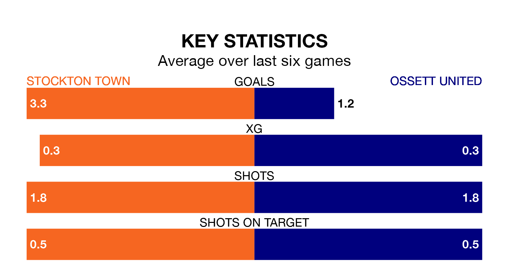

Mid-season relegation candidates Ossett United face a challenge away against high-flying Stockton Town on Saturday.
Ossett United are 18th in the Northern Premier League – Division One East table, and have picked up five wins and four draws in their 19 games to date.
Stockton, meanwhile, are top of the standings with 42 points, having won 13 and drawn three.
With 45 goals in 19 games so far this season, Stockton are the league's highest scorers with 2.4 goals per game. And they are conceding fewer than average, letting in 16 goals at a rate of 0.8 per game.
Ossett, meanwhile, are below average scorers, with 1.2 goals per game, compared to a league average of 1.6. They have conceded 2.1 goals per game.
Town are in fantastic form in the Northern Premier League Division One East, with five wins and a draw from their last six games.
With a win and two draws over that period, United's form is much worse – they have taken five points from 18, compared to the home side's 16.
Over the last two years, Stockton and Ossett have played each other on four occasions. Stockton won three of them and they drew once.
On average, Stockton scored 2.2 goals and Ossett 0.2 in those matches.
Their last meeting was on August 26, when Stockton won 1-0 away.
Stockton's last match was on December 26, a 3-2 win against Consett.
Ossett lost 4-0 against Pontefract Collieries last time out, on December 30.
Updated: 10:36, 03/01/24